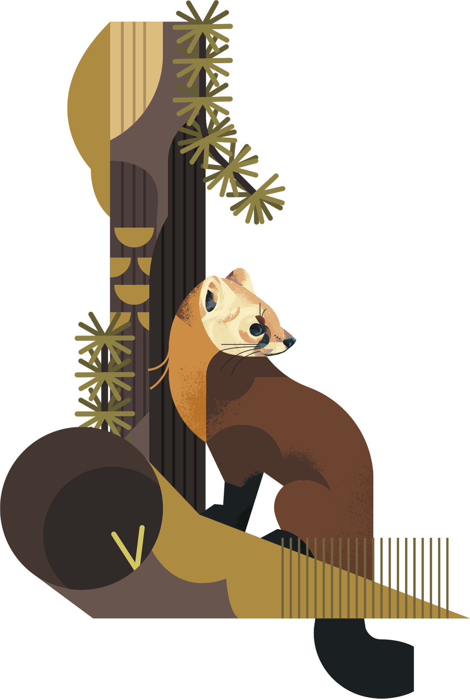

North America
American Marten
Cold Snap
The American Marten (Martes Americana) is one of the two marten species found in North
America. Found primarily in Alaska, Canada, and the Pacific Northwest, the American Marten evolved to thrive in
the cold and dense forests and hills of the north. Incredibly elusive, one must weather through the intense
climates to witness one of these weasels.
